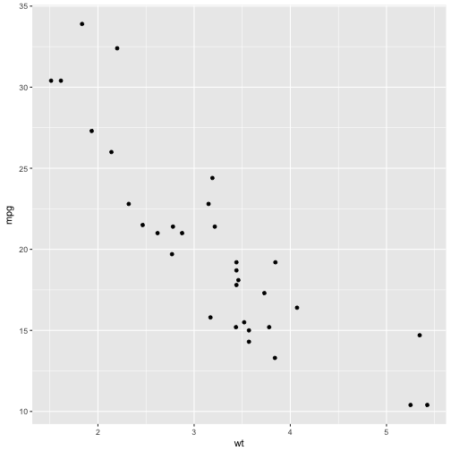

## OGR data source with driver: ESRI Shapefile
## Source: "/Users/ajr/Dropbox/hawaiiDimensions/geoData/env_data/geol", layer: "Haw_St_geo_20070426_region"
## with 9862 features
## It has 15 fields
## Integer64 fields read as strings: ID STRAT_CODE AGE_GROUP
## Warning in file(file, "rt"): cannot open file '../Haw_St_ageCode.csv': No
## such file or directory
## Error in file(file, "rt"): cannot open the connection
It's a presentation tool
inspired by the idea behind prezi.com
and based on the power of CSS3 transforms and transitions in modern browsers.
visualize your big thoughts
and tiny ideas
by positioning, rotating and scaling them on an infinite canvas
the only limit is your imagination
want to know more?
use the source, Luke
one more thing...
have you noticed it's in 3D*?
* beat that, prezi ;)
library(ggplot2)
qplot(wt, mpg, data = mtcars)

Use a spacebar or arrow keys to navigate